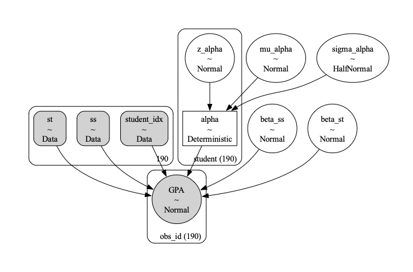
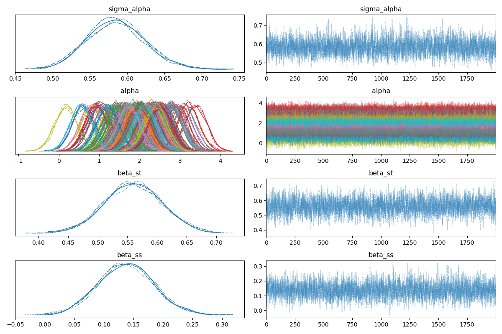
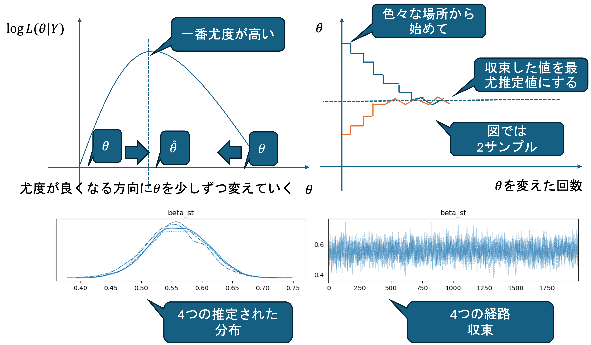

モデル診断と可視化
まずはPyMC で作成したモデルを確認します.
graph = model_to_graphviz(model)
graph.render(filename= save_dir + "hierarchical_bayes_model", format="pdf")上記のコードで, モデルの全体像が pdf ファイルとして保存されます.

論文等に掲載することもできるので, コードとの対応関係を確認しましょう.
続いて, モデルの診断結果を確認します. az.plot_trace() を用いることで, 指定した変数のサンプリング過程を可視化することができます.
# alpha は学生数分の次元を持つため,
# trace プロットでは代表 10 名分にサブセットして可視化する
sample_students = list(trace.posterior.coords["student"].values[:10])
az.plot_trace(trace
,var_names=["sigma_alpha"
,"alpha"
,"beta_st"
,"beta_ss"]
,coords={"student": sample_students})
plt.tight_layout()
plt.savefig(save_dir + 'trace.png')
plt.close()
この図では, 左側に 4 つのチェーンごとに推定された分布の形状, 右側にトレースの過程が表示されています.

大まかには,
- 左側の分布が全てのサンプルで概ね同じ形状になっている
- 右側のトレースが一箇所に収束している
ことから, 概ね良好に推定できていることが分かります.
ただし, alpha に関しては学生数が多いため (coords で 代表 10 名分のみを表示 している), 学生別の分布が異なる色で表示されている点に注意してください.
学生それぞれの基礎学力の分布が異なっている様が表現されています.
(全学生分のトレースを確認したい場合は coords を省略すればよいですが, arviz>=1.0 では az.rcParams['plot.max_subplots'] をデフォルトの 40 より大きな値に引き上げる必要があります).
グラフでは大まかな印象しかわからないので更に, az.summary() を利用してサンプリング結果を数値で確認してみます.
print(az.summary(trace
,var_names=["sigma_alpha"
,"alpha"
,"beta_st"
,"beta_ss"]))
summary_df = az.summary(trace
,var_names=["sigma_alpha"
,"alpha"
,"beta_st"
,"beta_ss"])
summary_df.to_csv("bayesian_summary.csv"
,encoding="utf-8-sig")結果は学生別の alpha が出力されており非常に長いため, 抜粋したものが以下になります.
| パラメータ | mean | sd | hdi_3% | hdi_97% | mcse_mean | mcse_sd | ess_bulk | ess_tail | r_hat |
|---|---|---|---|---|---|---|---|---|---|
| sigma_alpha | 0.586 | 0.039 | 0.514 | 0.659 | 0.001 | 0.001 | 2193 | 4123 | 1 |
| alpha[0] | 1.337 | 0.276 | 0.826 | 1.851 | 0.003 | 0.002 | 9277 | 5519 | 1 |
| alpha[1] | 2.23 | 0.272 | 1.725 | 2.759 | 0.003 | 0.002 | 9863 | 6118 | 1 |
| alpha[2] | 2.044 | 0.267 | 1.541 | 2.543 | 0.003 | 0.002 | 9771 | 5823 | 1 |
| alpha[3] | 2.177 | 0.278 | 1.644 | 2.683 | 0.003 | 0.002 | 6533 | 5528 | 1 |
| alpha[4] | 3.02 | 0.27 | 2.506 | 3.512 | 0.003 | 0.002 | 10929 | 6162 | 1 |
| alpha[5] | 1.543 | 0.276 | 1.036 | 2.054 | 0.003 | 0.002 | 9980 | 5880 | 1 |
| alpha[6] | 1.709 | 0.275 | 1.184 | 2.22 | 0.003 | 0.002 | 7096 | 4980 | 1 |
| alpha[7] | 2.535 | 0.273 | 1.985 | 3.023 | 0.003 | 0.002 | 8866 | 5628 | 1 |
| alpha[8] | 2.003 | 0.265 | 1.503 | 2.498 | 0.003 | 0.002 | 8334 | 6208 | 1 |
| alpha[9] | 2.783 | 0.27 | 2.247 | 3.267 | 0.003 | 0.002 | 8919 | 4931 | 1 |
| alpha[10] | 2.443 | 0.271 | 1.944 | 2.977 | 0.003 | 0.002 | 8207 | 5363 | 1 |
| alpha[180] | 1.205 | 0.283 | 0.666 | 1.724 | 0.003 | 0.002 | 8038 | 5827 | 1 |
| alpha[181] | 1.952 | 0.274 | 1.443 | 2.463 | 0.003 | 0.002 | 7932 | 6444 | 1 |
| alpha[182] | 2.039 | 0.272 | 1.529 | 2.552 | 0.003 | 0.002 | 9013 | 5407 | 1 |
| alpha[183] | 2.503 | 0.265 | 2.018 | 3.006 | 0.003 | 0.002 | 10853 | 6100 | 1 |
| alpha[184] | 2.017 | 0.277 | 1.481 | 2.519 | 0.003 | 0.002 | 6437 | 5893 | 1 |
| alpha[185] | 1.985 | 0.274 | 1.483 | 2.521 | 0.003 | 0.002 | 7264 | 6106 | 1 |
| alpha[186] | 1.729 | 0.279 | 1.198 | 2.251 | 0.003 | 0.002 | 8657 | 5455 | 1 |
| alpha[187] | 1.153 | 0.274 | 0.65 | 1.68 | 0.003 | 0.002 | 11005 | 5637 | 1 |
| alpha[188] | 2.412 | 0.272 | 1.898 | 2.918 | 0.003 | 0.002 | 7896 | 5719 | 1 |
| alpha[189] | 2.093 | 0.269 | 1.588 | 2.6 | 0.003 | 0.002 | 7705 | 5726 | 1 |
| beta_st | 0.559 | 0.048 | 0.473 | 0.651 | 0.001 | 0.001 | 1889 | 3833 | 1 |
| beta_ss | 0.139 | 0.048 | 0.044 | 0.225 | 0.001 | 0.001 | 1957 | 3460 | 1 |
- MCMC サンプリング統計量
この表には, MCMC サンプリングの結果を要約する統計量が含まれています.
mean: 事後分布の平均値です. パラメータの点推定値として使用されます.sd: 事後分布の標準偏差です. パラメータの不確実性を表します.hdi_3%,hdi_97%: 最高密度区間 (Highest Density Interval, HDI) の下限と上限です. 事後分布の 94% が含まれる区間を表します. これはベイズの信用区間の一種で, データと事前分布のもとでパラメータがこの区間に入る確率が 94% であることを示します (頻度主義の信頼区間とは意味が異なります).mcse_mean,mcse_sd: モンテカルロ標準誤差 (Monte Carlo Standard Error) です. MCMC サンプリングによる推定の不確実性を表します. この値が小さいほど, 推定が安定しています.ess_bulk,ess_tail: 有効サンプルサイズ (Effective Sample Size, ESS) です. MCMC サンプルには自己相関があるため, 実際に独立な情報を含むサンプル数を表します.ess_bulkは分布の中心部分,ess_tailは分布の尾部の有効サンプルサイズです. 通常, 400 以上であることが推奨されます.r_hat: \hat{R} 統計量 (Gelman-Rubin 統計量) です. 複数のチェーンが同じ分布に収束しているかを示す指標です. 1.0 に近いほど良好で, 通常 1.01 以下が推奨されます. 1.01 を超える場合は, サンプリングが不十分である可能性があります.
収束の診断:
- すべてのパラメータで r_hat = 1.0 となっており, 良好な収束を示しています. これは, 4 つのチェーンがすべて同じ分布に収束していることを意味します.
- 有効サンプルサイズ (
ess_bulk) は, すべてのパラメータで 400 を大きく超えており, サンプリングは適切に行われています. 特に,alpha[i]の多くは 6000-11000 の範囲で, 非常に良好なサンプリングが行われています.beta_stとbeta_ssは 1889 と 1957 となっており, やや低めですが, 推奨値 (400) を大きく上回っており, 問題ありません.
パラメータの推定値:
sigma_alpha = 0.586: 学生間の基礎学力のばらつきの標準偏差です. この値が大きいほど, 学生間の学力差が大きいことを示します. HDI 区間 [0.514, 0.659] は比較的狭く, 推定の不確実性は小さいです.alpha[i]: 各学生の基礎学力です. 例えば,alpha[4] = 3.02は, 学生 4 の基礎学力が高いことを示しています. 一方,alpha[187] = 1.153は, 学生 187 の基礎学力が低いことを示しています. 学生間で基礎学力に大きなばらつきがあることが分かります.beta_st = 0.559: 勉強時間の効果です. この値は正で, 勉強時間が 1 単位増加すると, GPA が平均的に 0.559 増加することを示しています. HDI 区間 [0.473, 0.651] は 0 を含まないため, 統計的に有意な正の効果があります. この区間は比較的狭く, 推定の不確実性は小さいです.beta_ss = 0.139: 奨学金の効果です. この値も正で, 奨学金を受給している学生の GPA が平均的に 0.139 高いことを示しています. HDI 区間 [0.044, 0.225] は 0 を含まないため, 統計的に有意な正の効果があります. この区間も比較的狭く, 推定の不確実性は小さいです.